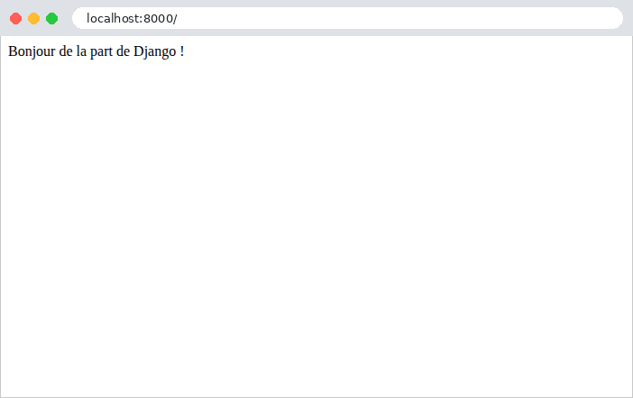
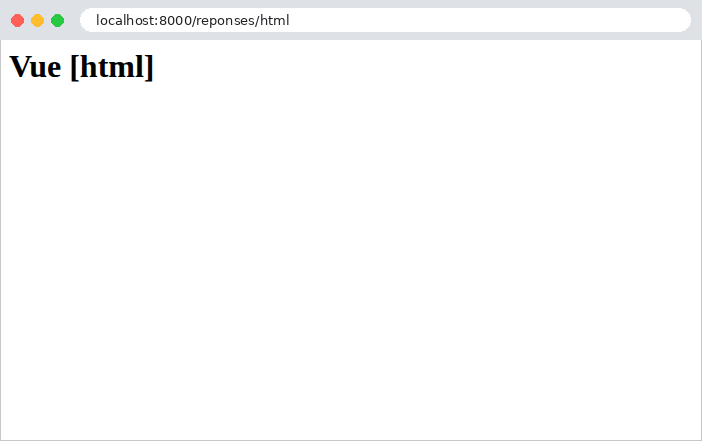

2. Vues, routage, réponses
Ce chapitre étudie le chemin d'une requête, du navigateur jusqu'à la vue qui la traite, et la réponse que renvoie cette vue. Les gabarits n'apparaîtront qu'au chapitre 3 : ici, les vues renvoient directement du texte ou du JSON.
2.1. Exemple 01 : la structure d'une application Django
Le premier exemple est la plus petite application [Django] possible. Un projet créé par [django-admin startproject] contient six fichiers, et une application créée par [python manage.py startapp] sept de plus (cf. introduction) ; nous n'en gardons ici que ceux dont l'application ne peut pas se passer :
- [manage.py] : l'outil en ligne de commande du projet. C'est par lui que l'on lance le serveur de développement, et bien d'autres commandes ;
- [config] : un paquet [Python], c'est-à-dire un dossier qui contient des modules [Python] (des fichiers [.py]) et un fichier [__init__.py]. On importe un module d'un paquet en écrivant [config.settings] (le fichier [config/settings.py]) ;
- [config/settings.py] : les réglages de l'application ;
- [config/urls.py] : les routes de l'application, et, dans ce premier exemple, sa seule vue ;
- [config/wsgi.py] : le point d'entrée de l'application pour un serveur web ;
- [config/__init__.py] : le fichier qui fait du dossier [config] un paquet. Il est souvent vide ; le nôtre ne contient qu'un commentaire.
2.1.1. Le point d'entrée : config/wsgi.py
[Python] a une norme pour les applications web : WSGI (Web Server Gateway Interface, prononcé « whisky »). Elle définit comment un serveur web confie une requête à une application [Python], et comment il en reçoit la réponse. Tous les serveurs web [Python] ([gunicorn], [waitress], [uWSGI], le serveur de développement de [Django]...) savent appeler une application WSGI, et tous les frameworks web [Python] ([Django], [Flask]...) en fabriquent une. Le fichier [config/wsgi.py] fabrique celle de notre projet :
- ligne 1 : un commentaire, de [#] jusqu'à la fin de la ligne. Tous les fichiers des exemples commencent par un commentaire qui rappelle leur nom et leur rôle ;
- ligne 3 : l'instruction [import] importe un module : ici [os], un module de la bibliothèque standard de [Python], qui donne accès au système d'exploitation, et en particulier aux variables d'environnement du processus ([os.environ]) ;
- ligne 5 : [from ... import ...] importe un nom d'un module : la fonction [get_wsgi_application] du module [django.core.wsgi]. Le nom complet d'un module dit où il se trouve : [django.core.wsgi] est le fichier [wsgi.py] du dossier [core] du paquet [django], installé dans l'environnement virtuel (cf. introduction). Après cet import, le fichier peut écrire simplement [get_wsgi_application] ;
- ligne 8 : [Django] trouve ses réglages grâce à la variable d'environnement [DJANGO_SETTINGS_MODULE], qui contient le nom du module de configuration : [config.settings]. [os.environ] se comporte comme un dictionnaire ; sa méthode [setdefault] lui donne une valeur, sauf si elle en a déjà une : une vraie variable d'environnement, fixée avant de lancer le serveur, l'emporte ;
- ligne 11 : [get_wsgi_application()] prépare [Django] : il lit les réglages, prépare le journal (logging), charge les applications du projet (exemple 02), puis rend l'application WSGI, rangée dans la variable [application]. C'est cette variable que le serveur web cherche dans le fichier. En [Python], une variable n'est pas déclarée : elle naît à sa première affectation, et peut recevoir des valeurs de tout type.
L'application WSGI est un objet que le serveur appelle, pour chaque requête reçue, avec la description de la requête ; l'objet rend la réponse. Toute l'application est donc une fonction qui transforme une requête en réponse. Entre les deux, [Django] fabrique un objet requête ([HttpRequest]), cherche la vue chargée de la requête (le routage), l'appelle, et récupère l'objet réponse ([HttpResponse]) qu'elle produit, qu'il transmet au serveur.
Ce fichier n'est exécuté qu'une fois, au démarrage du serveur. C'est la grande différence avec [PHP], que le lecteur du cours [Symfony] a vue à l'œuvre : en [PHP], l'application est reconstruite à chaque requête, puis oubliée ; en [Python], elle est construite une fois, au démarrage, puis reste en mémoire et traite toutes les requêtes suivantes. La configuration, la table des routes, les modules importés, les objets rangés dans des variables de module, tout cela est construit une fois, et partagé par toutes les requêtes. C'est rapide, mais cela demande des précautions : une donnée modifiée par une requête est vue par les suivantes, et, si le serveur traite plusieurs requêtes à la fois (le serveur de développement le fait, avec un fil d'exécution, un thread, par requête), deux requêtes peuvent modifier la même donnée en même temps. Nous y reviendrons à l'exemple 06, et surtout au chapitre sur les portées des données.
[Python] a une seconde norme, plus récente : ASGI (Asynchronous Server Gateway Interface), pour les applications asynchrones (les WebSockets, par exemple). [Django] sait fabriquer les deux ; le fichier [asgi.py] que crée [django-admin startproject] fabrique l'application ASGI. Nous nous en tiendrons à WSGI.
2.1.2. La configuration : config/settings.py
Les réglages de [Django] sont des variables du module [config.settings], écrites en majuscules. C'est un fichier [Python] ordinaire : on peut y calculer des valeurs, lire des variables d'environnement, importer d'autres modules. [Django] n'exige que quelques réglages ; tous les autres ont une valeur par défaut, définie dans le module [django.conf.global_settings] de [Django] (plus de 150 réglages). La commande [python manage.py diffsettings] affiche les réglages qui diffèrent de leur valeur par défaut :
- ligne 3 : [pathlib] est le module de la bibliothèque standard qui manipule les chemins de fichiers. Un objet [Path] représente un chemin ; il s'écrit de la même façon sous [Windows] et ailleurs ;
- ligne 6 : le dossier du projet. [__file__] est le chemin du fichier en cours ([config/settings.py]) ; [resolve()] le rend absolu ; [.parent] désigne le dossier qui le contient ([config]), et [.parent.parent] le dossier au-dessus : le dossier [01-structure]. Ce réglage, [BASE_DIR], n'est pas un réglage de [Django] : c'est une commodité, que les autres réglages utiliseront pour désigner des dossiers du projet ([BASE_DIR / "templates"], exemple 13 : l'opérateur [/] assemble deux morceaux de chemin) ;
- ligne 10 : le mode debug. S'il vaut [True], une exception non traitée affiche une page d'erreur détaillée (exemple 03), et le serveur de développement sert lui-même les fichiers statiques (exemple 15). Ce mode est fait pour le développement, et seulement pour lui : la page d'erreur révèle le code source et la configuration de l'application ;
- ligne 13 : la clé secrète de l'application : une chaîne aléatoire, que [Django] utilise pour signer certaines données (les cookies signés, les jetons de protection anti-CSRF, les liens de réinitialisation de mot de passe...). Ce réglage est obligatoire : sans lui, [Django] refuse de démarrer. Chaque exemple a la sienne. Le préfixe [django-insecure-] est celui que met [django-admin startproject] : il rappelle que cette clé, écrite dans le code source, ne doit pas servir en production, où l'on fournit la clé par une variable d'environnement (étude de cas) ;
- ligne 17 : les noms d'hôte que l'application accepte de servir (l'entête [Host] de la requête). C'est une protection contre les requêtes qui mentent sur le site visé. Une liste vide vaut, en mode debug, [localhost], [127.0.0.1] et [::1] ; hors du mode debug, elle doit être remplie : sinon [python manage.py runserver] refuse de démarrer. En [Python], [[a, b]] est une liste ;
- lignes 20-21 : la langue de l'application ([fr] : les dates, les nombres, les messages de [Django] sont en français, cf. exemple 06) et son fuseau horaire. Les chaînes s'écrivent entre guillemets ou entre apostrophes, au choix : les exemples utilisent les guillemets ;
- ligne 24 : le module qui contient les routes de l'application : [config.urls], c'est-à-dire le fichier [config/urls.py] ;
- ligne 27 : l'application WSGI, désignée par son chemin complet : la variable [application] du module [config.wsgi]. C'est elle que lance le serveur de développement.
2.1.3. Les routes et la vue : config/urls.py
- lignes 3-4 : l'import de la classe [HttpResponse], la réponse HTTP, et de la fonction [path], qui déclare une route ;
- lignes 9-11 : une vue : une fonction qui reçoit la requête, et rend la réponse. [def] définit une fonction ; son corps est le bloc indenté qui suit les deux-points. En [Python], l'indentation n'est pas une question de présentation : c'est elle qui délimite les blocs (là où [PHP] ou [Java] utilisent des accolades). Le paramètre [request] reçoit la requête, un objet [HttpRequest] que [Django] passe toujours en premier à une vue (exemple 05) ; c'est une convention de [Django] de le nommer [request] ;
- ligne 11 : la vue rend un objet [HttpResponse], dont le premier paramètre est le corps de la réponse. En [Python], on crée un objet en appelant sa classe comme une fonction, sans mot-clé [new]. C'est la règle de [Django] : une vue rend toujours un objet [HttpResponse] (exemple 03) ;
- lignes 15-17 : la table de routage. [Django] cherche dans le module [ROOT_URLCONF] une variable nommée [urlpatterns] : une liste de routes. La route [path("", accueil)] associe le chemin vide (la racine du site, [/]) à la vue [accueil]. On remarque que le chemin d'une route s'écrit sans la barre oblique de tête : [Django] la retire du chemin demandé avant de le comparer aux routes. On remarque aussi que l'on passe à [path] la fonction elle-même ([accueil], sans parenthèses), et non son résultat : en [Python], une fonction est un objet comme un autre, que l'on peut ranger dans une variable ou passer à une autre fonction. [Django] l'appellera plus tard, pour chaque requête [/]. La virgule après le dernier élément de la liste est permise, et d'usage quand les éléments sont écrits un par ligne.
Dans un vrai projet, les vues ne sont jamais écrites dans le fichier des routes : elles vont dans les fichiers [views.py] des applications (exemple 02). Nous l'avons fait ici pour réduire l'exemple à l'essentiel.
2.1.4. L'outil manage.py
Le fichier [manage.py] est un script [Python], qui prépare [Django], comme [config/wsgi.py], mais pour exécuter une commande plutôt que traiter des requêtes :
- ligne 1 : sous [Linux] et [macOS], cette ligne permet d'exécuter le fichier directement ([./manage.py]) ; sous [Windows], on écrit toujours [python manage.py] ;
- ligne 10 : le module de configuration, comme dans [config/wsgi.py] ;
- lignes 12-13 : un import peut aussi se faire à l'intérieur d'une fonction. [execute_from_command_line] exécute la commande demandée : [sys.argv] est la liste des paramètres de la ligne de commande ([["manage.py", "runserver"]]) ;
- lignes 16-17 : [__name__] vaut ["__main__"] quand le fichier est exécuté directement ([python manage.py]), et le nom du module quand il est importé. Cette condition, que l'on trouve dans beaucoup de scripts [Python], appelle la fonction [main] seulement dans le premier cas.
[python manage.py help] affiche la liste des commandes disponibles : vingt-cinq dans cet exemple, davantage quand on ajoute des applications de [Django] (les fichiers statiques, les sessions, l'authentification...). Nous en utiliserons plusieurs : [runserver], [check] (la vérification du projet), [shell] (une console [Python] où [Django] est prêt), [makemessages] et [compilemessages] (les traductions, exemple 22), [collectstatic] (les fichiers statiques, étude de cas ; c'est l'application [django.contrib.staticfiles] qui l'ajoute). [django-admin] (cf. annexes) est le même outil, qui ne sait pas, lui, où est la configuration du projet.
2.1.5. Exécution
Dans un terminal ouvert sur le dossier [01-structure], où l'on a activé l'environnement virtuel des exemples (cf. introduction), on tape [python manage.py runserver]. [Django] affiche :
La commande [runserver] lance le serveur de développement intégré à [Django]. Il vérifie d'abord le projet (system checks) : des réglages manquants ou incohérents, des routes mal écrites, produisent ici des erreurs ou des avertissements, avant toute requête. Il écoute ensuite sur le port 8000 de la machine elle-même ([127.0.0.1], [localhost]) : il n'accepte que les requêtes venues de cette machine, ce qui convient au développement ([python manage.py runserver 0.0.0.0:8000] l'ouvrirait aux autres machines du réseau). On l'arrête par [Ctrl-C]. Ce serveur est fait pour le développement, comme le rappelle son avertissement : en production, ce sera un serveur WSGI comme [gunicorn] ou [waitress] (cf. étude de cas).
La première ligne indique que le serveur surveille les fichiers du projet ([StatReloader] : il compare régulièrement leur date de modification). Puisque l'application reste en mémoire, une modification d'un fichier [Python] ne serait pas vue par l'application en cours d'exécution : le serveur de développement redémarre donc de lui-même dès qu'un fichier change. Il n'est pas nécessaire de le relancer à la main, sauf après l'ajout d'un nouveau fichier qui n'est encore importé par personne.
Demandons l'URL [http://localhost:8000/] avec un navigateur :

puis avec [curl]. L'option [-i] affiche aussi les entêtes HTTP de la réponse :
La première ligne de la réponse est la version du protocole, le code de statut, 200, et son libellé, [OK]. Viennent ensuite les entêtes : la date, le serveur (le serveur WSGI de la bibliothèque standard de [Python], sur lequel est bâti le serveur de développement), le type du contenu, et [Connection: close] (le serveur de développement ferme la connexion après chaque réponse). Une ligne vide sépare les entêtes du corps de la réponse. Dans la suite du document, nous ne reproduirons plus les entêtes [Date], [Server] et [Connection], qui ne varient pas.
L'entête [Content-Type: text/html; charset=utf-8] indique que la réponse est du HTML, dont les caractères sont codés en UTF-8. C'est le choix de [Django] pour une réponse dont la vue n'a pas précisé le type : le navigateur interprète donc la chaîne comme du HTML (ici, sans balise, elle s'affiche telle quelle). L'exemple 03 montrera comment annoncer un autre type. La réponse est minimale : pas d'entête [Content-Length], pas de cookie, aucun entête de sécurité. Ce sont les middlewares de [Django] (exemple 03) qui les ajoutent, et notre application n'en a aucun.
À chaque requête, la console du serveur affiche une ligne de journal : la date, la ligne de la requête (méthode, chemin, protocole), le code de la réponse et la taille de son corps, en octets :
Modifions le texte de la ligne 11 de [config/urls.py] et enregistrons le fichier : la console affiche [.../01-structure/config/urls.py changed, reloading.], puis les lignes de démarrage. La requête suivante reçoit le nouveau texte.
2.2. Exemple 02 : le routage
Le routage associe une URL à une vue. Écrire toutes les vues dans le fichier des routes deviendrait vite illisible : on les range dans des applications. Une application [Django] est un paquet [Python] qui regroupe ce qui concerne un même domaine : ses vues, ses routes, et, plus tard, ses gabarits, ses formulaires, ses modèles. Un projet est un assemblage d'applications. L'exemple 02 en a deux :
Les fichiers [manage.py], [config/__init__.py] et [config/wsgi.py] sont ceux de l'exemple 01 : nous ne les citerons plus. Le fichier [config/settings.py] commence toujours par les mêmes réglages (seuls changent le nom de l'exemple et la clé secrète) ; nous ne commenterons que ceux qu'ajoute chaque exemple. Ici, la liste des applications :
- lignes 17-20 : le réglage [INSTALLED_APPS] énumère les applications du projet, désignées par le nom de leur paquet. [Django] les charge au démarrage, dans cet ordre. Pour notre exemple, la déclaration n'est pas indispensable : les vues de [accueil] et de [premier] sont trouvées par les imports des fichiers de routes. Elle le deviendra dès que les applications apporteront des gabarits (exemple 13), des balises de gabarits (exemple 16), des traductions (exemple 22) ou des modèles de l'ORM (exemple 28), que [Django] ne cherche que dans les applications déclarées. [Django] fournit lui-même plusieurs applications ([django.contrib.sessions], [django.contrib.messages], [django.contrib.staticfiles], [django.contrib.admin]...), que l'on déclare de la même façon.
2.2.1. La vue de l'application accueil
- ligne 4 : l'import d'un décorateur de [Django] ;
- lignes 9-10 : un décorateur est une fonction qui en enveloppe une autre, pour modifier son comportement. On l'écrit [@nom] au-dessus de la définition de la fonction : [@require_GET] au-dessus de [def index] équivaut à écrire, après la définition, [index = require_GET(index)]. La fonction [index] est remplacée par une fonction qui vérifie d'abord la méthode HTTP de la requête : si ce n'est pas GET, elle répond elle-même par une erreur 405, sans appeler [index]. Sans décorateur, une vue accepte toutes les méthodes. Le module [django.views.decorators.http] contient aussi [require_POST], [require_safe] (GET et HEAD) et [require_http_methods(["GET", "POST"])]. On remarque que [require_GET] refuse jusqu'à la méthode HEAD (la même requête que GET, sans le corps de la réponse) : il faut [require_safe] pour l'accepter. Par convention, un nom de fonction ou de variable [Python] s'écrit en minuscules, les mots séparés par des soulignés ([require_GET] fait exception), un nom de classe avec une majuscule à chaque mot ([HttpResponse]) ;
- lignes 11-22 : une chaîne sur plusieurs lignes, délimitée par trois guillemets (["""]). La vue rend du HTML, envoyé avec le type [text/html] (cf. exemple 01).
La vue [index] renvoie ainsi une page HTML qui contient des liens vers les vues de l'autre application :

2.2.2. Les vues de l'application premier
- lignes 9-11 : une vue sous forme de fonction, comme à l'exemple 01 ;
- lignes 16-21 : une vue peut aussi être une classe, qui hérite de la classe [View] de [Django]. En [Python], l'héritage s'écrit en mettant la classe mère entre parenthèses, après le nom de la classe. La classe a une méthode par méthode HTTP traitée, au nom de la méthode HTTP en minuscules : [get] pour GET, [post] pour POST. [Django] appelle celle qui correspond à la requête ; une méthode HTTP qu'aucune méthode de la classe ne traite produit une erreur 405. Une méthode [Python] reçoit toujours en premier paramètre l'objet sur lequel elle est appelée, nommé [self] par convention ; la requête vient ensuite. C'est la façon la plus claire de traiter plusieurs méthodes HTTP sur une même URL (une fonction devrait tester [request.method] elle-même, cf. exemple 11). [Django] propose aussi des vues génériques, des classes toutes prêtes pour les besoins courants ([TemplateView], [ListView], [FormView]...), que ce document n'utilise pas : elles cachent ce que nous voulons justement montrer ;
- lignes 26-28 : une vue qui reçoit un paramètre de route, [id], après la requête. La valeur est déjà convertie en entier (cf. plus loin). La chaîne [f"Produit n° {id}"] est une f-chaîne (f-string) : les expressions écrites entre accolades sont remplacées par leur valeur ;
- lignes 32-34 : deux paramètres de route. [Django] les passe à la vue par leur nom (des paramètres nommés) : l'ordre des paramètres de la vue n'a pas d'importance. Ici, [numero] est écrit avant [id] ;
- lignes 38-40 : un paramètre de route qui contient des barres obliques.
2.2.3. Les routes : config/urls.py et premier/urls.py
Il reste à associer les URL aux vues. La table de routage principale, celle du réglage [ROOT_URLCONF] :
- ligne 5 : l'import du module [views] de l'application [accueil], sous un autre nom : [as accueil_views]. Deux applications peuvent avoir chacune un module [views] ; le renommage évite de les confondre ;
- ligne 9 : la route de la racine du site. Le troisième paramètre, [name], nomme la route : ce nom permettra de fabriquer son URL (exemple 04), sans l'écrire en dur. [Python] accepte les paramètres par position ou par nom ([name="accueil"]) : les paramètres nommés rendent l'appel lisible ;
- ligne 12 : [include] délègue une partie des URL à une autre table de routage : toutes les URL qui commencent par [premier/] sont confiées aux routes du module [premier.urls], auxquelles [Django] ne passe que la fin du chemin. Chaque application garde ainsi ses routes dans son propre fichier [urls.py], et le projet décide seulement à quel préfixe il les monte. Le préfixe se termine par une barre oblique : c'est l'usage de [Django], où les routes des applications ne commencent jamais par une barre oblique.
- ligne 10 : [app_name] donne un espace de noms (namespace) aux routes du fichier : pour le reste du projet, la route nommée [produit] s'appelle [premier:produit]. Deux applications peuvent ainsi avoir chacune une route [index] sans conflit ;
- ligne 14 : le chemin [""] désigne le préfixe lui-même : l'URL [/premier/] ;
- ligne 17 : la vue écrite sous forme de classe. [as_view()] est une méthode de la classe [View] qui fabrique la fonction que [Django] appellera pour chaque requête : cette fonction crée un objet [Action01], puis appelle sa méthode [get] ou [post], selon la méthode HTTP de la requête. Un nouvel objet est créé pour chaque requête ;
- ligne 20 : [<int:id>] est un paramètre de route : ce segment de l'URL peut prendre plusieurs valeurs. [id] est le nom du paramètre, qui sera passé à la vue ; [int] est un convertisseur, qui n'accepte que des chiffres et passe à la vue un entier : pour l'URL [/premier/produits/17], le paramètre [id] de la vue vaut l'entier 17. Si le segment n'est pas fait de chiffres, la route ne correspond pas. C'est la liaison de données (data binding), que le chapitre suivant étudiera en détail ;
- ligne 22 : deux paramètres de route ;
- ligne 25 : le convertisseur [path] accepte n'importe quelle fin de chemin, barres obliques comprises. [Django] a cinq convertisseurs : [str] (le convertisseur par défaut : [<nom>] équivaut à [<str:nom>] ; tout texte non vide sans barre oblique), [int] (des chiffres), [slug] (des lettres, des chiffres, des tirets et des soulignés, comme dans [mon-article-01]), [uuid] (un identifiant UUID) et [path]. L'exemple 12 montrera comment écrire un convertisseur « maison », et l'exemple 22 la fonction [re_path], qui décrit une route par une expression régulière.
Pour chaque requête, [Django] parcourt les routes dans l'ordre, et s'arrête à la première qui correspond au chemin demandé : l'ordre des routes compte quand deux routes peuvent correspondre au même chemin.
2.2.4. Exécution
Voici les réponses à quelques requêtes :
Pour envoyer une requête POST, on utilise l'option [-X POST] de [curl] :
La requête POST est acceptée telle quelle. Ce ne sera plus le cas quand l'application aura le middleware de protection anti-CSRF de [Django] (exemple 18), qui refuse toute requête POST qui ne prouve pas venir d'un formulaire de l'application. Une méthode HTTP que la vue ne traite pas produit une erreur 405 ([Method Not Allowed]). L'entête [Allow] indique les méthodes acceptées :
La réponse n'a pas de corps. La classe [View] accepte, en plus des méthodes de la classe, la méthode HEAD (traitée par la méthode [get]) et la méthode OPTIONS (qui rend la liste des méthodes acceptées). La console du serveur signale le refus :
Le décorateur [@require_GET] produit la même erreur :
Une URL qu'aucune route ne traite produit une erreur 404. C'est aussi le cas d'un identifiant qui n'est pas un nombre : le convertisseur [int] empêche la route de correspondre à [/premier/produits/abc].
Dans un navigateur, en mode debug :

La page d'erreur de [Django] explique qu'aucune route ne correspond au chemin demandé, et liste, dans l'ordre, toutes les routes de l'application, avec leur nom : c'est un bon moyen de vérifier ses routes ([Django] n'a pas de commande qui les liste). On remarque que les routes de l'application [premier] ont bien reçu le préfixe [premier/], et que le chemin a été comparé sans sa barre oblique de tête. Le chapitre 6 montrera comment remplacer cette page par une page propre à l'application. Remarquons encore que [Django] distingue [/premier/] de [/premier] : la seconde URL n'a pas de route, et produit une erreur 404. Un middleware de [Django], [CommonMiddleware] (étude de cas), corrige ce cas : quand un chemin sans barre oblique finale n'a pas de route, mais que le même chemin avec la barre oblique en a une, il redirige le navigateur (exemple 04) vers ce second chemin (c'est le réglage [APPEND_SLASH], actif par défaut).
2.3. Exemple 03 : les réponses d'une vue
Ce que renvoie une vue détermine la réponse HTTP. L'exemple 03 passe en revue les principaux cas :
Les routes de l'application [reponses], montées au préfixe [reponses/] par le fichier [config/urls.py], associent chaque URL [/reponses/xxx] à une vue :
Commentons ce code :
- ligne 5 : les classes de réponse et d'exception du module [django.http] ;
- ligne 8 : l'import d'une classe d'un module de la même application. Le point de [.modeles] désigne le paquet du fichier en cours ([reponses]) : c'est un import relatif ;
- lignes 12-14 : [HttpResponse] accepte des paramètres nommés : [content_type] annonce ici du texte brut ([text/plain]) : le navigateur n'interprétera pas les balises. [status] (le code de statut, 200 par défaut) et [headers] (un dictionnaire d'entêtes) sont les autres ;
- lignes 18-20 : la même chaîne, sans type annoncé : [Django] l'envoie avec le type [text/html], et le navigateur l'interprète ;
- lignes 26-28 : [JsonResponse] est une classe fille de [HttpResponse] : elle convertit son premier paramètre en JSON, et annonce le type [application/json]. La conversion est faite par le module [json] de la bibliothèque standard, qui ne connaît que les types de base de [Python] : dictionnaires, listes, chaînes, nombres, booléens et [None]. Un objet doit donc d'abord être transformé en dictionnaire : c'est ce que fait la fonction [asdict] (ligne 3) pour une classe de données, comme [Personne], présentée plus bas. La vue s'appelle [en_json] : si elle s'appelait [json], elle masquerait, dans ce fichier, le module [json] s'il était importé ;
- lignes 32-34 : un dictionnaire [Python], écrit entre accolades, devient un objet JSON ;
- lignes 39-41 : une liste devient un tableau JSON. Par défaut, [JsonResponse] n'accepte qu'un dictionnaire : c'est une ancienne précaution contre une faille des navigateurs d'autrefois, qui permettait à un site tiers de lire un tableau JSON. Le paramètre [safe=False] lève cette restriction ;
- lignes 45-49 : une liste calculée. La méthode [sort] trie la liste (elle la modifie elle-même). [[n * 10 for n in nombres]] est une liste en compréhension : la liste des valeurs [n * 10], pour chaque élément [n] de la liste [nombres] ;
- lignes 53-55 : le paramètre [status] : 201 ([Created]) remplace 200 ;
- lignes 59-61 : le code 204 ([No Content]) signifie « rien à afficher » : la réponse n'a pas de corps ;
- lignes 65-67 : une erreur « prévue » : une réponse 404 ([Not Found]), avec un corps JSON choisi par la vue. Le texte est entre guillemets parce qu'il contient une apostrophe ;
- lignes 71-73 : la même erreur, produite par une exception. [Http404] est une exception de [Django] ; l'instruction [raise] la lève, ce qui interrompt la vue. [Django] la transforme en réponse d'erreur 404. C'est la façon la plus courante d'arrêter une vue en erreur, même au fond d'une fonction appelée par la vue. Le module [django.shortcuts] offre deux raccourcis qui la lèvent : [get_object_or_404] et [get_list_or_404] (pour les modèles de l'ORM, chapitre 7). [django.core.exceptions] définit les exceptions qui produisent les autres codes d'erreur : [PermissionDenied] (403), [BadRequest] (400), [SuspiciousOperation] (400) ;
- lignes 77-79 : une erreur « imprévue » : une exception que personne ne traite produit une réponse 500 ([Internal Server Error]). [RuntimeError] est une classe d'exception de la bibliothèque standard de [Python], disponible sans import ;
- lignes 84-86 : l'erreur à ne pas commettre. Une vue [Django] doit rendre un objet [HttpResponse] ; celle-ci fabrique bien la réponse, mais oublie de la rendre. Une fonction [Python] sans [return] rend la valeur [None], que [Django] refuse (nous verrons la réponse plus bas). C'est une différence avec d'autres frameworks, comme [Flask], qui transforment eux-mêmes un dictionnaire ou une chaîne en réponse : [Django] veut que la vue dise explicitement quelle réponse elle rend.
La classe [Personne] :
- ligne 3 : le module [dataclasses] de la bibliothèque standard ;
- lignes 9-13 : une classe de données. Les lignes [nom: str] déclarent des attributs, avec leur type (des annotations de type, que [Python] n'impose pas à l'exécution, mais que l'éditeur de code vérifie). Le décorateur [@dataclass] écrit lui-même, d'après ces attributs, le constructeur de la classe (la méthode [__init__], appelée par [Personne("Martin", "Jean", 42)]), sa comparaison ([==]) et sa représentation en texte ([Personne(nom='Martin', prenom='Jean', age=42)]). Avec [frozen=True], les attributs ne peuvent plus être modifiés après la construction : un objet [Personne] est immuable. Rien n'oblige à ranger cette classe dans un module [modeles.py] : c'est un choix de ce document, qui réserve le nom [models.py] aux modèles de l'ORM de [Django] (chapitre 7).
Reste le fichier [config/middleware.py] :
Par défaut, une réponse [JsonResponse] contient un JSON compact, sur une seule ligne, dont les caractères non ASCII sont écrits sous forme d'échappements : [créée] devient [créée], ce qui est du JSON valide, mais peu lisible. Pour les exemples de ce cours, nous voulons un JSON lisible. Plutôt que de le demander dans chaque vue (le paramètre [json_dumps_params] de [JsonResponse] le permettrait), nous modifions toutes les réponses JSON de l'application, grâce à un mécanisme central de [Django] : les middlewares.
Un middleware est un maillon de la chaîne qui mène de la requête à la vue, puis de la vue à la réponse. [Django] enchaîne les middlewares du réglage [MIDDLEWARE] comme des poupées russes : le premier reçoit la requête, et la passe au suivant, qui la passe au suivant, et ainsi de suite jusqu'à la vue ; la réponse de la vue remonte ensuite la chaîne dans l'ordre inverse. Chaque middleware peut examiner, ou modifier, la requête à l'aller et la réponse au retour, et même répondre lui-même, sans appeler la suite. C'est ainsi que [Django] lui-même est construit : la session, la protection anti-CSRF, les messages, la langue sont des middlewares.
- lignes 11-13 : un middleware est une classe. [Django] en crée un seul objet, au démarrage de l'application, en passant à son constructeur ([__init__]) la fonction [get_response] : la suite de la chaîne (les middlewares suivants, puis la vue). Le constructeur la range dans un attribut de l'objet, [self.get_response] ;
- lignes 15-24 : la méthode [__call__] rend l'objet appelable comme une fonction : [Django] l'appelle pour chaque requête, avec la requête. Ce qui précède l'appel de [self.get_response(request)] s'exécute avant la vue, ce qui le suit, après : ici, le middleware ne fait rien avant la vue ;
- lignes 19-23 : si la réponse est une réponse JSON (la fonction [isinstance] teste la classe d'un objet), le middleware relit son corps ([response.content], des octets), le décode ([json.loads]), puis le réencode ([json.dumps]) avec deux options : [ensure_ascii=False] (les caractères non ASCII écrits tels quels) et [indent=4] (une présentation indentée, sur plusieurs lignes). L'affectation de [response.content] remplace le corps de la réponse ;
- ligne 24 : le middleware rend la réponse, qui continue sa remontée.
Il reste à déclarer le middleware, dans le fichier [config/settings.py] :
- lignes 20-22 : le réglage [MIDDLEWARE] énumère les middlewares de l'application, dans l'ordre où la requête les traverse, désignés par le chemin complet de leur classe. Nous le verrons se remplir au fil des exemples. Les exemples 05 à 12 réutilisent ce middleware.
Dans un navigateur, la différence entre [text/plain] et [text/html] est visible :


Voici les réponses des autres vues :
L'objet a été converti en objet JSON, un champ par attribut. La vue [/reponses/dictionnaire] produit exactement la même réponse.
La réponse de l'exception est la page d'erreur de [Django], celle de l'exemple 02, avec notre message à la place de la liste des routes. Même quand le client demande une réponse JSON, par l'entête [Accept: application/json] (option [-H] de [curl] : [curl -i -H "Accept: application/json" http://localhost:8000/reponses/abandon]), la réponse reste la page HTML : [Django] n'adapte pas ses réponses d'erreur au type demandé. Une application qui veut des erreurs en JSON les fabrique elle-même, par un middleware (exemple 08). La console signale l'erreur :
Reste l'exception imprévue. En mode debug, le navigateur affiche la page d'erreur de [Django] : le type et le message de l'exception, la vue en cours, le fichier et la ligne où elle a été levée, puis la pile d'appels (traceback), la liste des fonctions en cours d'exécution au moment de l'erreur, de la plus ancienne à la plus récente :

Plus bas dans la page, la dernière fonction de la pile est notre vue, [erreur], à la ligne 79 du fichier [reponses/views.py] ; au-dessus, les fonctions de [Django] qui l'ont appelée. Pour chaque fonction, le lien Local vars affiche la valeur de ses variables locales ; la suite de la page affiche la requête (ses paramètres, ses cookies, ses entêtes) et tous les réglages de l'application (ceux dont le nom évoque un secret, comme [SECRET_KEY], sont masqués par des étoiles). C'est pour tout cela que le mode debug ne doit jamais être activé sur un serveur accessible à d'autres. L'erreur est aussi écrite dans le journal de l'application, c'est-à-dire, ici, dans la console du serveur, avec la pile d'appels :
Sans le mode debug ([DEBUG = False] dans le fichier [config/settings.py], avec [ALLOWED_HOSTS = ["localhost"]], puisque la liste ne peut plus être vide), la même requête produit une courte page d'erreur, qui ne révèle rien du code :
et l'erreur 404 de [/reponses/abandon] devient elle aussi une courte page ([Not Found] : « The requested resource was not found on this server. »), sans notre message. Hors du mode debug, [Django] n'écrit plus non plus la pile d'appels dans la console : il l'envoie par courrier aux administrateurs du site, s'ils sont déclarés (réglage [ADMINS]). L'étude de cas montrera comment configurer le journal. Le chapitre 6 montrera comment afficher une page d'erreur propre à l'application.
Enfin, la vue qui oublie de rendre sa réponse :
La console donne le message de l'exception :
Le message est clair : « la vue n'a pas rendu d'objet HttpResponse ; elle a rendu None ». C'est une erreur fréquente chez les débutants : dans une vue qui a plusieurs branches ([if] / [else]), l'une d'elles oublie son [return].
2.4. Exemple 04 : les redirections
Une redirection est une réponse qui demande au navigateur d'aller chercher une autre URL : un code 3xx, et l'entête [Location], qui contient la nouvelle adresse. Le navigateur envoie aussitôt une seconde requête, vers cette adresse. Les routes de l'exemple :
Le fichier [config/urls.py] monte les routes de l'application [redirections] à la racine du site (préfixe vide). Le fichier [redirections/urls.py] n'a pas de ligne [app_name] : ses routes n'ont pas d'espace de noms, et s'appellent simplement [page], [nouvelle]... Les vues :
- ligne 4 : le module [django.shortcuts] réunit des raccourcis, des fonctions qui rendent les services les plus courants en une ligne : [redirect], [render] (le chapitre sur les gabarits), [get_object_or_404]... ;
- lignes 9-11 : [redirect] fabrique une réponse de redirection (un objet [HttpResponsePermanentRedirect] ou [HttpResponseRedirect], deux classes filles de [HttpResponse]) vers l'adresse donnée. Avec [permanent=True], le code est 301 ([Moved Permanently]) : la page a définitivement changé d'adresse, et le navigateur (et les moteurs de recherche) peuvent retenir la nouvelle ;
- lignes 21-23 : sans [permanent=True], [redirect] produit une redirection temporaire, de code 302 ([Found]). L'adresse est calculée en recollant des morceaux de texte (l'opérateur [+] concatène deux chaînes), ce qui pose un problème, que nous allons voir ;
- lignes 28-30 : [redirect] accepte aussi le nom d'une route (['page']), suivi de ses paramètres ([nom=destination]) : il fabrique alors lui-même l'adresse, grâce à la fonction [reverse] de [Django], qui fait le chemin inverse du routage (d'un nom de route et de ses paramètres vers une URL), et code correctement les paramètres pour une URL. Si l'on change un jour le chemin de la route [page], les redirections vers elle suivront d'elles-mêmes. Pour une route d'une application qui a un espace de noms, le nom s'écrit [premier:produit] (exemple 02) ;
- lignes 40-41 : une redirection vers un autre site : l'adresse est prise telle quelle. [redirect] essaie d'abord de voir dans la chaîne un nom de route ; à défaut, une chaîne qui contient une barre oblique ou un point est prise comme une adresse (sinon, c'est une erreur).
Les réponses, avec [curl] (qui, sans option, ne suit pas les redirections) :
L'entête [Location] contient l'adresse telle que la vue l'a donnée, relative au site : le navigateur la complète avec le protocole, la machine et le port de la page en cours. La réponse n'a pas de corps. L'option [-L] de [curl] suit la redirection, comme le ferait un navigateur :
Comparons maintenant les deux redirections calculées, avec une destination qui contient un point d'interrogation, codé [%3F] dans l'URL (un [?] non codé commencerait les paramètres de l'URL) :
[Django] a décodé le paramètre de route avant de le passer à la vue : [destination] vaut [a?b]. La première vue le recolle tel quel dans l'adresse : [/page/a?b], que le navigateur comprend comme le chemin [/page/a] suivi du paramètre [b]. La seconde passe par la route nommée, dont le paramètre est codé à nouveau : [/page/a%3Fb]. En suivant les redirections :
Seule la seconde arrive sur la bonne page. D'où la règle : une adresse qui contient une valeur variable se fabrique à partir du nom de sa route ([redirect("page", nom=...)], [reverse("page", kwargs={"nom": ...})], et, dans les gabarits, la balise [{% url %}]), jamais en recollant des chaînes. Dans le navigateur, on ne voit que la page finale ; la barre d'adresse affiche la nouvelle URL :

Deux autres codes de redirection existent : 303 ([See Other]) et 307 ([Temporary Redirect]), que l'on obtient en fabriquant soi-même la réponse : [HttpResponseRedirect(url, status=303)]. Après une requête POST, les codes 302 et 303 font envoyer par le navigateur une requête GET vers la nouvelle adresse, alors que 307 (et 308, la version permanente) lui font répéter la requête POST. L'exemple 20 utilisera la redirection après un POST.
2.5. Exemple 05 : les objets requête et réponse
Jusqu'ici, les vues ne se servaient que des paramètres de route, et rendaient une réponse construite d'une ligne. Une vue peut aussi consulter la requête en cours, et construire sa réponse pièce par pièce. L'application s'appelle [requetes] (et non [http], comme dans le cours [Symfony] : [http] est déjà le nom d'un paquet de la bibliothèque standard de [Python], que le nôtre masquerait) ; ses routes sont montées au préfixe [http/] :
- lignes 11-20 : le paramètre [request] de la vue, que nous n'avions pas encore utilisé, est l'objet [HttpRequest] de la requête en cours. Ses attributs et ses méthodes donnent tout ce qu'elle contient : sa méthode HTTP ([method]), son chemin ([path]), son URL complète ([build_absolute_uri()], qui ajoute le protocole, la machine et le port), ses entêtes ([headers], un dictionnaire dont les clés ne tiennent pas compte des majuscules : [headers.get("user-agent")] donnerait le même résultat). L'attribut [META] est un dictionnaire qui contient toutes les variables que le serveur WSGI a transmises : les entêtes (sous des noms comme [HTTP_USER_AGENT]), les paramètres bruts (la partie de l'URL qui suit le [?], [QUERY_STRING]), l'adresse IP du client ([REMOTE_ADDR])... La méthode [get] d'un dictionnaire rend la valeur d'une clé, ou [None] si la clé n'existe pas, là où [d["clé"]] lèverait une exception [KeyError]. Les paramètres, un par un, seront l'objet du chapitre suivant ;
- lignes 24-28 : la réponse est d'abord créée, puis complétée : un objet [HttpResponse] se manipule comme un dictionnaire d'entêtes. [reponse["X-Exemple"] = ...] ajoute l'entête [X-Exemple] (par convention, les entêtes propres à une application commencent souvent par [X-]) ; [reponse.headers] donne aussi accès à ces entêtes ;
- lignes 32-35 : la réponse construite en une fois : le corps, le code de statut et les entêtes. Un appel de fonction peut s'écrire sur plusieurs lignes : à l'intérieur de parenthèses, [Python] ignore les passages à la ligne ;
- lignes 40-49 : une réponse envoyée par morceaux (streaming). Un objet [StreamingHttpResponse] reçoit, au lieu d'une chaîne, un itérateur : un objet qui produit des morceaux, les uns après les autres. Ici, c'est le résultat d'une fonction génératrice : une fonction qui contient l'instruction [yield]. Appeler [morceaux()] n'exécute pas la fonction : cela rend un générateur, qui exécutera la fonction pas à pas, d'un [yield] au suivant, chaque fois qu'on lui demandera un morceau. La fonction est définie à l'intérieur de la vue : c'est permis en [Python]. Le serveur envoie le code et les entêtes, puis chaque morceau dès qu'il est produit. La réponse ne connaît pas sa longueur à l'avance. C'est utile pour une réponse très longue, produite petit à petit (un gros fichier CSV, par exemple). Mais une fois le premier morceau parti, le code de statut ne peut plus changer : ici, la fonction lève une exception après le premier morceau. C'est l'erreur à ne pas commettre : une réponse commencée ne peut plus devenir une réponse d'erreur.
Le middleware [JsonLisible] est celui de l'exemple 03. Les réponses :
Les guillemets autour de l'URL empêchent le terminal d'interpréter le caractère [&]. Dans un navigateur, l'entête [User-Agent] est celui du navigateur.
Au bout d'une seconde, [curl] s'arrête : le serveur a fermé la connexion. Le client a reçu un code 200 et un corps simplement tronqué, sans aucun moyen de savoir qu'une erreur s'est produite. [Django] n'a rien pu faire : quand l'exception est levée, sa vue a fini son travail depuis longtemps (elle a rendu la réponse et son générateur), et c'est le serveur, en demandant le morceau suivant, qui reçoit l'exception. Seule la console du serveur l'indique, avec une pile d'appels qui part du serveur WSGI de [Python], et non de [Django] :
2.6. Exemple 06 : services partagés
Une vue ne devrait pas contenir elle-même la logique de l'application : elle la délègue à des services, des objets qui savent faire une chose (lire des produits, calculer un panier...). Plusieurs vues utilisent souvent le même service. [Symfony], comme [Spring] ou [ASP.NET Core], possède pour cela un conteneur de services, qui crée les services et les fournit automatiquement à ceux qui en ont besoin : c'est l'injection de dépendances. [Django] n'a rien de tel. En [Python], un module n'est exécuté qu'une fois, à son premier import, et tous ceux qui l'importent ensuite reçoivent le même module : un objet rangé dans une variable de module est donc déjà partagé par toute l'application. Les modules font office de conteneur. Il reste à organiser les choses pour que les vues dépendent d'un contrat, et non d'une implémentation. L'exemple 06 organise son code par domaine (les produits, les clients), c'est-à-dire, en [Django], par application :
2.6.1. Le produit : produits/modeles.py
- ligne 7 : une classe de données immuable (cf. exemple 03). Un objet immuable peut être partagé sans risque entre plusieurs parties du code, et entre plusieurs requêtes ;
- lignes 9-12 : les attributs, avec leur type. Le prix est un entier, le prix en centimes (150 pour 1,50 €). Un nombre à virgule, de type [float], est représenté en binaire, et ne sait pas représenter exactement 0,1 ou 3,2 (en binaire, ces nombres ont une infinité de chiffres) : une somme de prix en [float] peut donner 5.500000000000001. Une somme d'entiers, elle, est toujours exacte. [Python] offre aussi le type [Decimal] (module [decimal]), qui calcule exactement en base 10 : c'est lui que l'ORM de [Django] utilise pour les colonnes décimales d'une base de données.
2.6.2. Le contrat du service et son implémentation : produits/services.py
- lignes 3, 10 : le contrat du service : ce qu'il sait faire, sans dire comment. [Java] ou [C#] l'écriraient par une interface ; [Python] l'écrit par une classe abstraite, qui hérite de la classe [ABC] (Abstract Base Class) du module [abc]. On ne peut pas créer d'objet d'une classe abstraite ;
- lignes 11-18 : les méthodes du contrat, marquées [@abstractmethod] : une classe fille doit toutes les écrire, sinon on ne pourra pas créer d'objet de cette classe fille non plus. Leur corps, [...] (l'objet [Ellipsis]), ne fait rien : il est là parce qu'une fonction [Python] doit avoir un corps. Les annotations de type décrivent le contrat : [find_all] rend une liste de produits ([list[Produit]]) ; [find_by_id] reçoit un entier et rend un produit, ou [None] s'il n'existe pas ([Produit | None]) ;
- ligne 22 : l'implémentation hérite du contrat ;
- lignes 23-30 : le constructeur. [self._produits] est un attribut de l'objet ; le souligné de tête est une convention de [Python] pour dire « privé » : rien n'empêche un autre module de s'en servir, mais il sait qu'il ne devrait pas. La ligne 25 affiche un message dans la console, pour que nous voyions quand le service est créé ;
- lignes 32-34 : la méthode rend une copie de la liste des produits ([list(...)] fabrique une nouvelle liste) : l'appelant peut la modifier sans toucher aux données du service (les objets [Produit], eux, ne sont pas copiés, mais ils sont immuables) ;
- lignes 36-38 : [(p for p in self._produits if p.id == id)] est une expression génératrice, cousine de la liste en compréhension de l'exemple 03 : elle produit, un par un, les produits dont l'identifiant est [id]. La fonction [next] rend le premier élément produit, ou la valeur de son second paramètre ([None]) s'il n'y en a aucun.
2.6.3. Le fournisseur du service : produits/fournisseur.py
Les vues ne créent pas le service elles-mêmes : elles le demandent à une fonction, le fournisseur, qui décide quelle implémentation créer, et veille à n'en créer qu'une :
- ligne 5 : [django.conf.settings] donne accès aux réglages de l'application, ceux du fichier [config/settings.py] complétés par les valeurs par défaut : [settings.DEBUG], [settings.LANGUAGE_CODE]... C'est ainsi que tout module de l'application lit sa configuration ;
- ligne 6 : [import_string] importe un objet désigné par son chemin complet, sous forme de chaîne : c'est ainsi que [Django] trouve les middlewares du réglage [MIDDLEWARE] ;
- lignes 14-18 : la fonction fournisseur. Elle lit le nom de la classe choisie dans le réglage [PRODUITS_SERVICE], la charge, crée un objet de cette classe ([classe()]) et le rend. Le décorateur [@cache], du module [functools] de la bibliothèque standard, retient le résultat du premier appel : les appels suivants rendent le même objet, sans exécuter la fonction. Le service n'est donc créé qu'une fois, au premier appel, et partagé ensuite par toutes les vues et toutes les requêtes, tant que le serveur tourne. C'est ce qu'on appelle ailleurs un singleton. Il est aussi paresseux : tant qu'aucune vue ne l'a demandé, il n'est pas créé. L'annotation [-> ProduitsService] indique le type rendu : le contrat, et non l'implémentation.
Il reste à choisir l'implémentation, dans le fichier [config/settings.py] :
- ligne 25 : un réglage propre à l'application. [Django] accepte, dans le fichier des réglages, toute variable écrite en majuscules, et la rend disponible par [django.conf.settings]. C'est ici, et ici seulement, que l'on choisit l'implémentation du service. Pour passer à une implémentation qui lit une base de données, il suffirait de changer cette ligne : les vues, qui ne connaissent que le contrat, ne changeraient pas. C'est l'intérêt de l'injection de dépendances, obtenu ici sans conteneur : chaque partie de l'application dépend de contrats, et un seul endroit décide des implémentations. Le paquet [produits] s'appelle aussi [produits] dans le réglage [INSTALLED_APPS] (ligne 15) : [Django] l'importe au démarrage.
2.6.4. Les vues des produits et des clients
- ligne 8 : la vue importe le fournisseur, et non la classe [ProduitsServiceMemoire] : elle ignore que les produits sont en mémoire ;
- lignes 12-16 : la vue délègue le travail au service. La liste de produits est transformée en liste de dictionnaires, qui devient un tableau JSON (exemple 03) ;
- lignes 20-24 : un produit inconnu produit une réponse 404, avec un message en JSON. Le convertisseur [<int:id>] de la route (fichier [produits/urls.py]) garantit que [id] est un entier.
- lignes 7, 12 : cette seconde application utilise le même service que celle des produits, en l'important du paquet [produits]. Le fournisseur lui rend le même objet ;
- ligne 14 : [sum] fait la somme des éléments produits par l'expression génératrice ;
- lignes 15-18 : [len] rend le nombre d'éléments d'une liste. Le total est rendu en centimes, et mis en forme en euros : [number_format], du module [django.utils.formats], écrit un nombre avec deux décimales, selon les conventions de la langue de l'application : la virgule comme séparateur décimal, pour le français. La division [total / 100] produit un [float], mais seulement pour l'affichage : les calculs, eux, ont été faits en entiers. L'exemple 16 montrera une bien meilleure façon de mettre en forme des montants.
Un mot, enfin, sur la durée de vie de ce service partagé. Nous l'avons vu à l'exemple 01 : en [Python], l'application reste en mémoire d'une requête à l'autre. Le service est donc unique pour toute l'application : la requête suivante recevra le même objet que la précédente, et les données qu'une requête y aurait modifiées seraient vues par toutes les suivantes. Pour un service qui ne fait que lire des données fixes, comme celui-ci, c'est parfait : il n'est construit qu'une fois. Pour un service dont les données changent (la liste des tâches de l'exemple 20), c'est commode (les données survivent aux requêtes, sans fichier ni base de données), mais il faut prendre deux précautions : deux requêtes simultanées peuvent modifier les données en même temps, il faudra donc les protéger par un verrou ; et les données disparaissent quand le serveur s'arrête (ou redémarre, après une modification du code). C'est l'inverse exact de [PHP], où chaque requête a ses propres services, recréés à chaque fois.
2.6.5. Exécution
La console du serveur affiche le message du constructeur à la première requête qui demande le service, et seulement à elle :
La console du serveur :
Le service n'a été créé qu'une fois, pour les trois requêtes et les deux applications. Si l'on modifie un fichier du projet, le serveur redémarre, et le message réapparaît à la requête suivante.